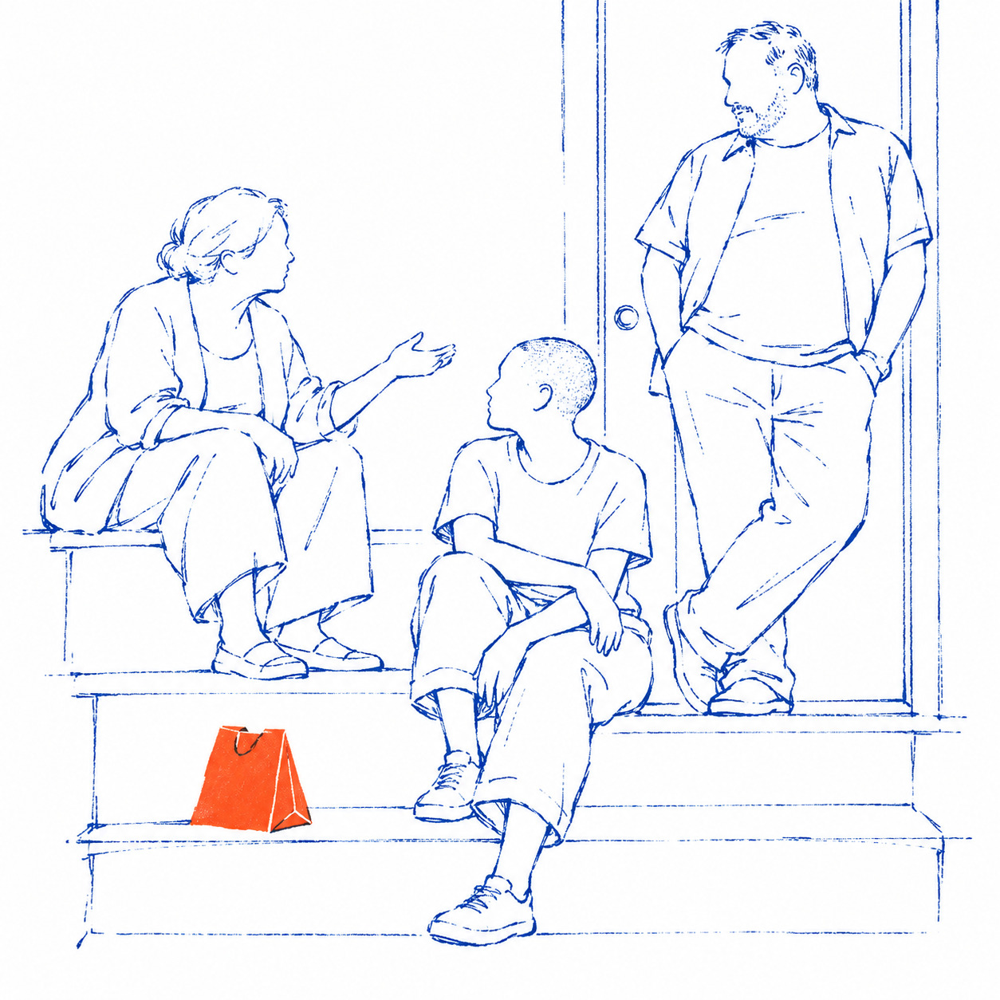
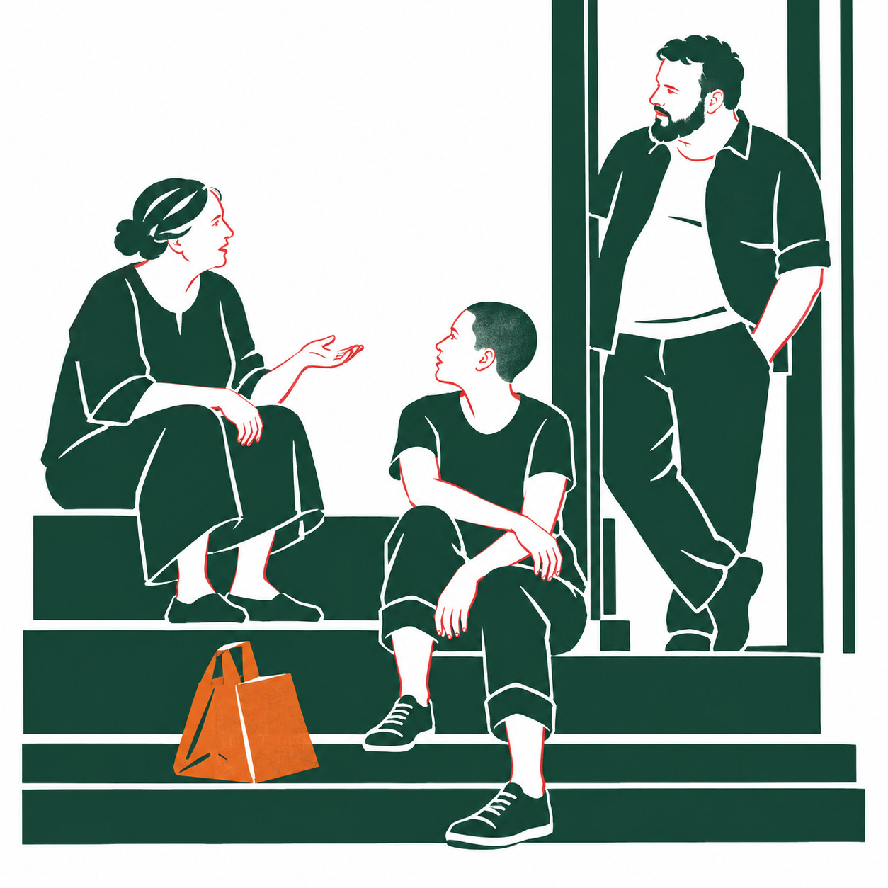
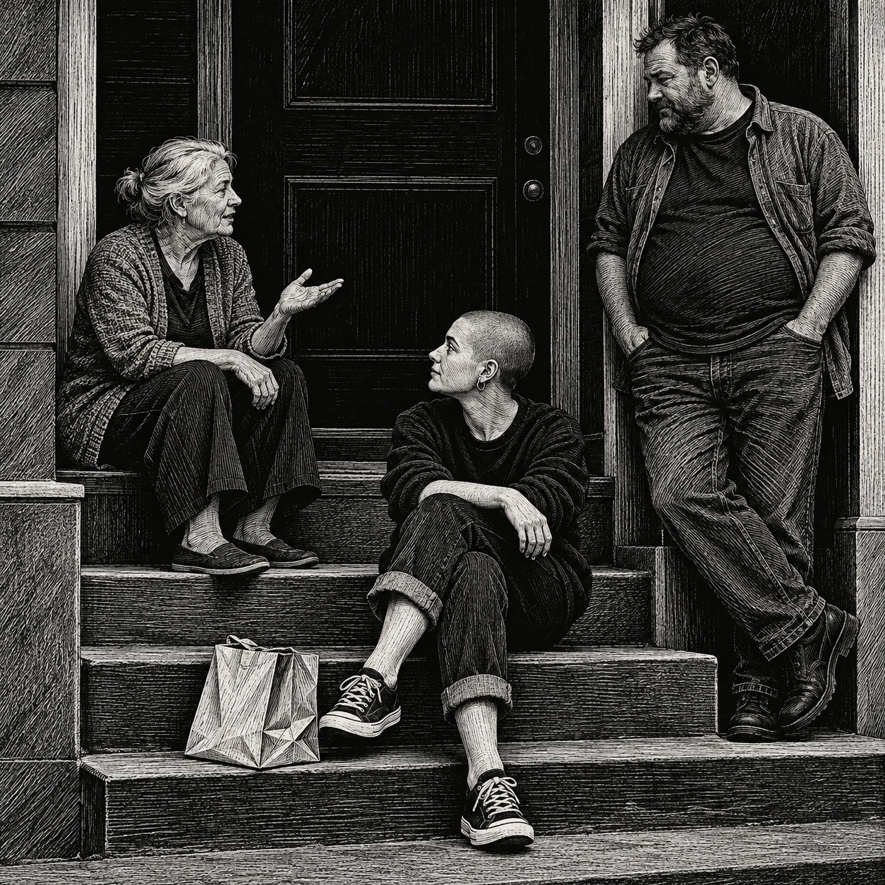
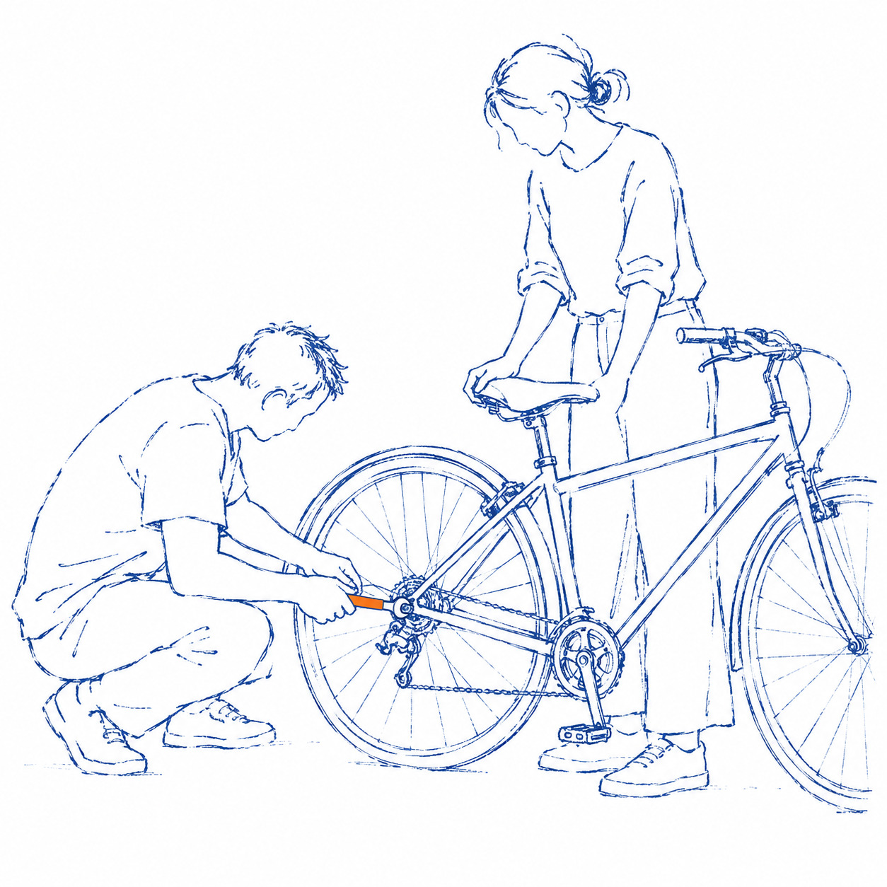
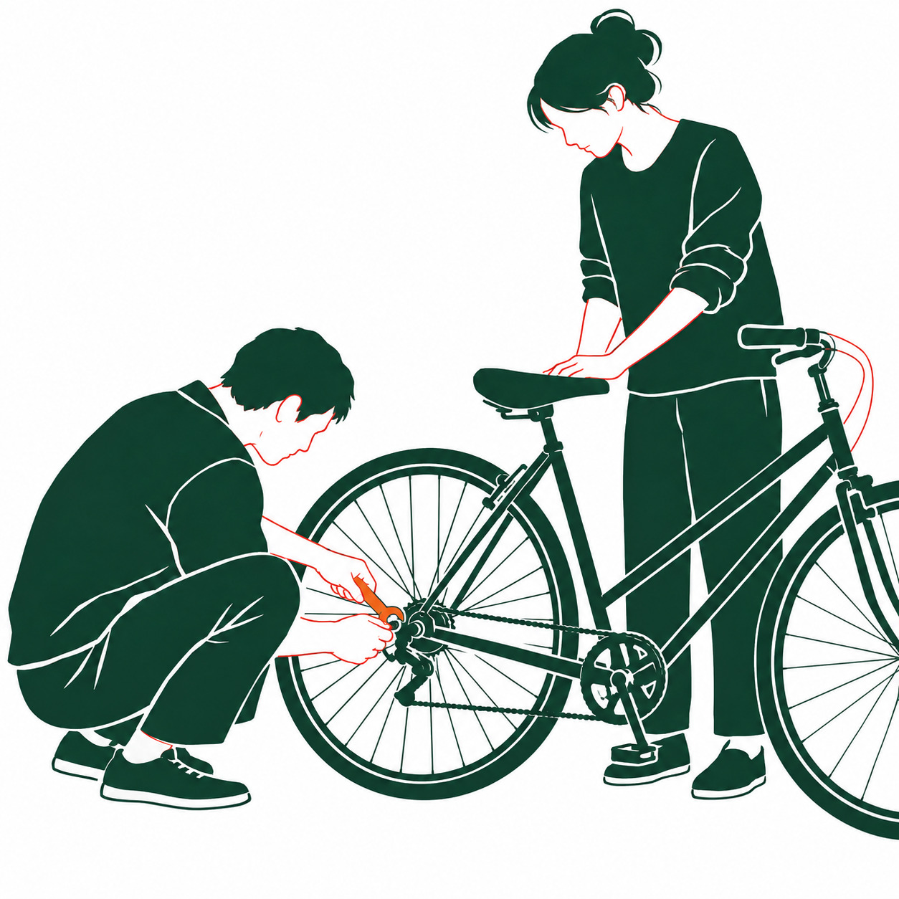
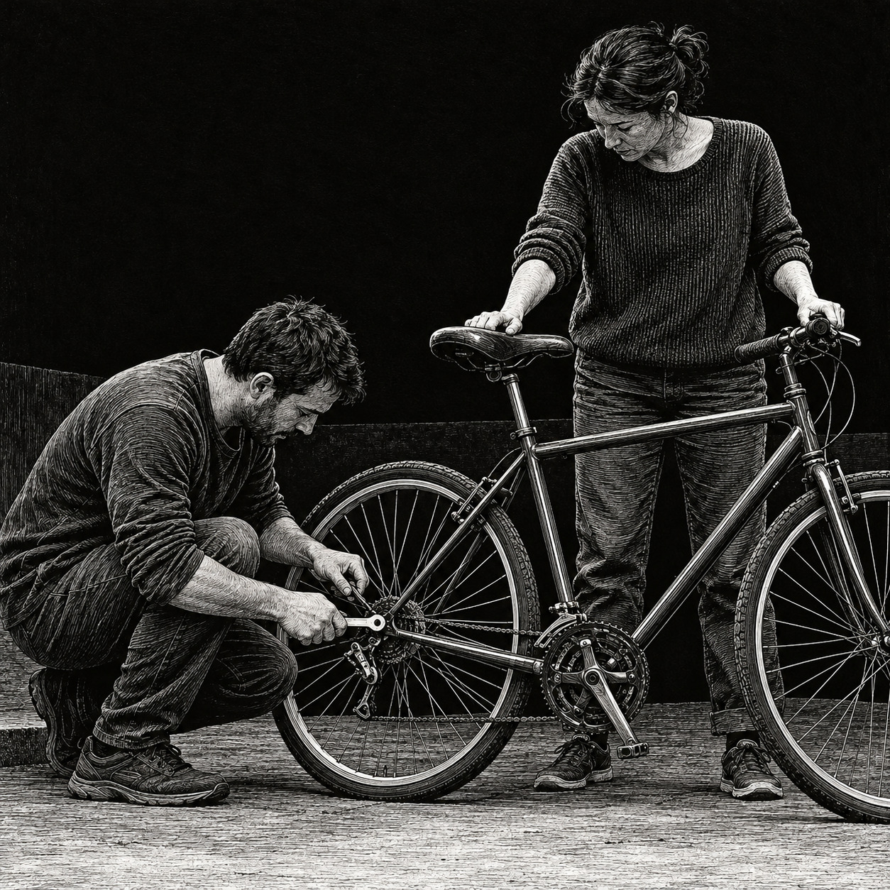
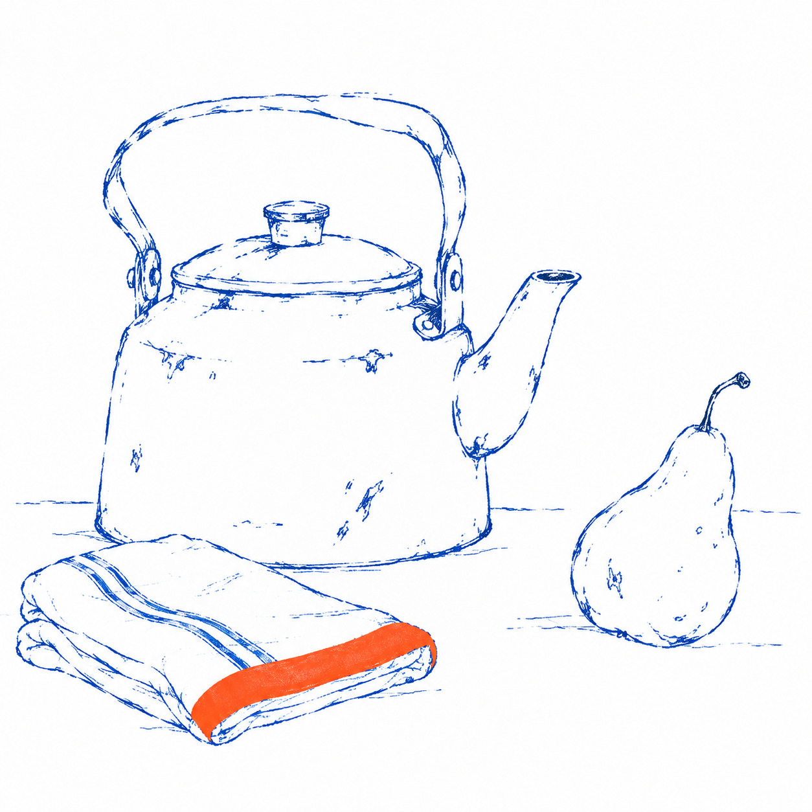
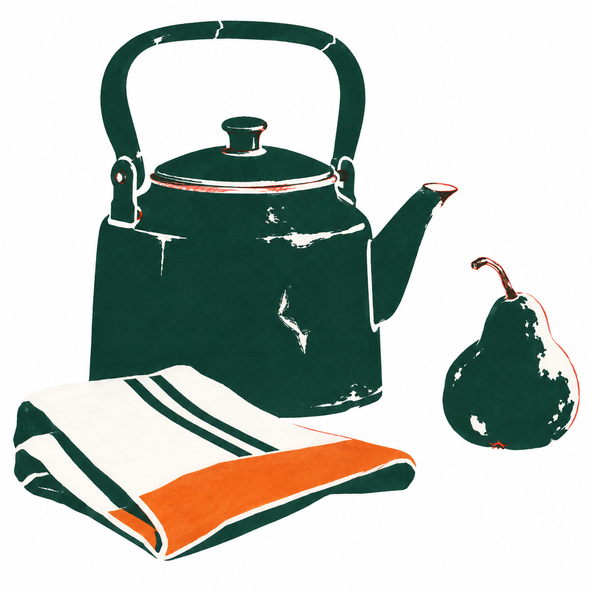
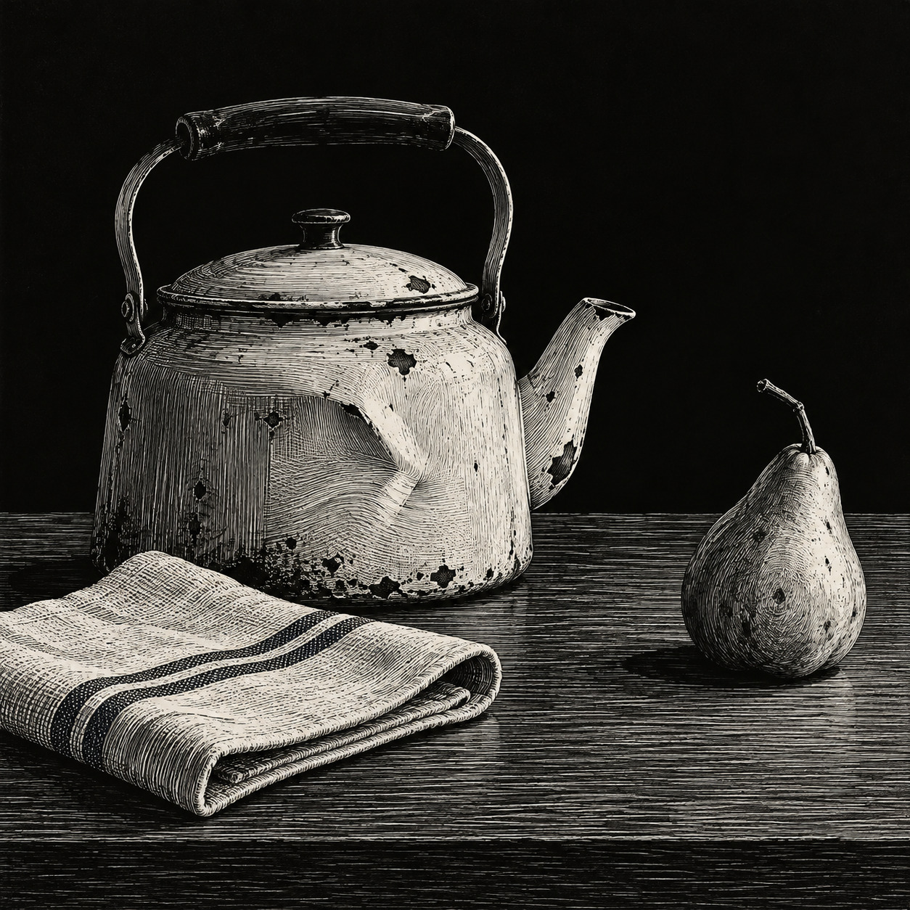

Can a style travel?
3 fixed grammars × 3 subjects · prompt-only first passes
Three neighbours

Carbon & citrus
Stencil + red pencil
White-line engravingA bicycle, together

Carbon & citrus
Stencil + red pencil
White-line engravingKettle, cloth, pear

Carbon & citrus
Stencil + red pencil
White-line engraving